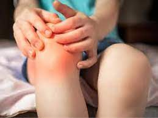

Juvenile idiopathic arthritis

CAUSES
The causes of JIA are not known. Factors that may be involved, alone or in combination, include genetics (the disease may be inherited), infection and environmental factors that influence the immune system.
SYMPTOMS
Symptoms vary depending on the type of JIA and may include:
- Pain, swelling and tenderness in the joints.
- The joints may also feel warm.
-
Morning joint stiffness
-
Limping gait (younger children may not be able to perform motor activities)
-
Fever
-
Rash
-
Weight loss
-
Swollen lymph nodes
-
Fatigue or irritability
-
Eye redness, eye pain, and blurred vision
DIAGNOSIS
The doctor may also order these tests:
- Imaging techniques such as X-rays or magnetic resonance imaging (MRI) to show the condition of the joints;
-
Laboratory tests on blood, urine, and/or joint fluid to help determine the type of arthritis. These include tests to determine the degree of inflammation and the presence of the substances antinuclear antibody (ANA) and rheumatoid factor. These tests also can help rule out other diseases — such as an infection, bone disorder, or cancer — or an injury as the cause of the symptoms.
TREATMENTS
The goals of treatment are to relieve pain, reduce swelling, increase joint mobility and strength, and prevent joint damage and complications. Treatment generally includes medications and exercise